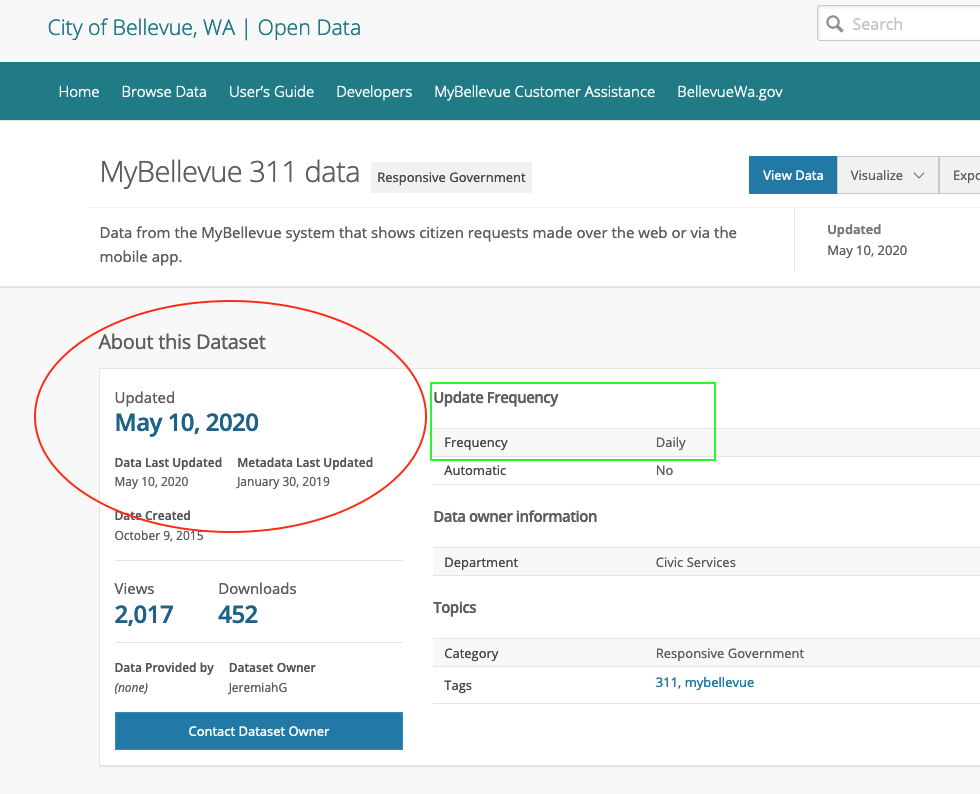

Chapter 8 Data Acquisition, Search, and Discovery
The last week in our four ‘Grand Challenges in Data Curation’ focuses on the process of searching for, discovering, and accessing data that is made publicly available on the web. This is a complicated problem because of the simple fact that “data on the web” have unique properties that are similar to, but fundamentally different than “documents” that are structured for indexing and retrieval within information systems. In the following chapter I review the fundamental challenges that data curators face in making data discoverable.
8.1 Chapter
Data are increasingly published to the web with open licenses that enable their reuse across sectors. While there is increasingly more open data available, there has been relatively little innovation with what are typically metadata-driven search engines that facilitate open data discovery.
As both a scientific transparency and public sector accountability movement, open data has gone through a number of iterative stages of development - from simply making structured information accessible (Janssen, Charalabidis, and Zuiderwijk, 2012) to the development of infrastructures that allow for reliable long-term preservation (Charalabidis et al, 2018). While significant investment from governments has enhanced the ability to publish open data there has been relatively little innovations with the representation and description of these resources for discovery and reuse (Miller et al, 2018).
For example, set similarity search, which depends upon keywords, titles, and other machine-readable metadata, has been implemented in a number of algorithmic driven solutions that provided indexes of catalogued open civic data (Chen et al, 2019).
Similarly, Google has recently developed a “dataset search engine” that depends upon dataset owners publishing semantically enhanced metadata through schema.org. Google’s dataset search engine aggregates, normalizes, and reconciles this metadata to provide users a search interface that is similar, in appearance, to web-based searching traditional to Google’s general keyword-query search engines (Brickley, et al 2019).
Linked data approaches that focus on semantic enhancement have also been a key source of information science innovation in data discovery, but these solutions also depend upon a simple set of attributes that are marked up through extensive effort by data publishers for indexing and retrieval. And problematically, empirical surveys demonstrate that semantic methods of markup are not only difficult for data publishers to accurately implement, but are also inefficient for developing comprehensive indexes of open data published to the web (Mountantonakis & Tzitzikas, 2019).
Open data search and discovery, that is how end-users of a system construct queries, locate data for reuse, and evaluate potential data quality issues is a relatively emergent field of information science research. Of course, scholarly communications and social scientists have long studied the personal and professional motivations for practicing scientists that share data, but only recently have these researchers turned their attention to the phenomena of data discovery (Zhu et al, 2018; Gregory et al. 2019). Information retrieval researchers have also conducted important studies on systems performance and search behaviors of open government data users, but much of this research has focused on enumerating or describing challenges, rather than providing a pathway forward to enhance data discovery.
This is for good reason - it is challenging to break out of a paradigm of data discovery that is not based on key attributes (read: descriptive metadata) because that is often the only substantive information that is available for describing what a resource is and what it contains. Descriptive metadata are, so to speak, the identity conditions of data published the the web. The issues that we explored in our Tidy Metadata chapter should indicate why this intense focus on metadata is a problematic and difficult challenge for data discovery:
- Knowledge organization and representation activities for data are often carried out by individuals not trained in these fields. This results in poorly or undstandardized descriptions that are not useful to discovering new resources.
- There are a finite number of repository environments where data are stored - but these repositories vary greatly in which descriptive metadata is used, and how these metadata can be accurately aggregated to allow users to search across repositories.
- Versions of datasets are often unwieldy in a repository - there may be multiple tables, multiple versions of tables, etc. Multiple versions of data may prohibit the retrieval of one precise dataset that can be reliably indexed.
8.1.1 A Brief Review of Information Searching
In order to gain a greater understanding of data discovery as a curation challenge it is worth reflecting on how search and discovery typically works for end-users of an information system. Generally, information search and discovery falls under the umbrella of “information seeking behavior” or “information retrieval” in Information Science. These two fields have much to teach us about the representation of data for discovery. Below I will briefly review some key concepts in both of these topics, and then offer examples for how data curators address these topics in facilitating data discovery.
8.1.1.1 Search and seeking
In searching for information one typically turns to reliable or trusted authorities. Patrick Wilson described this process as an appeal to a “cognitive authority” on what constitutes a trusted or valued resource within an institution. Information search has a long history within information science, but for practical purposes let’s consider just three techniques that users typically employ when searching for information:
Subject Search (Buckland, 1979) - In a subject driven search a user will turn to a cognitive authority to retrieve an item based on keywords that are controlled by some standard (e.g. searching for a book based on an Library of Congress subject heading), by an author that they know to produce works in a certain genre, or by a field or domain that has been aggregated into a certain subject specific interface (e.g. searching the San Diego Open Data portal for information about police activities). Subject search is, in some ways, relying upon known descriptive elements about a subject and attempting to retrieve relevant information that results. The burden of sifting through and making sense of the retrieved resources are on the end-user.
Type Search (Hjorland, 1998) - Type search refines a subject search by retrieving only media that is relevant to a particular query. For example, searching a catalogue for instances of
csvwill yield substantially fewer resources than say searching for anything and everything that a catalogue contains about policing in San Diego, CA.Known-Item Search (Lee and Renear, 2006) - A known‐item search occurs when the user “has a limited but correct description of an existing document. The user is sure of the fact that the document exists, that its title and author are explicitly stated somewhere in the document” (Dahlström & Gunnarsson, 2000). Known-item search is also a variation of a subject search - it is an attempt to locate a specific document or resource within an information system that the user knows can and should be discoverable.
In all three of the search strategies employed a distinction can be drawn between the recall and precision of an information system.
- Recall is the total set of documents that are retrieved when a search or query is executed.
- Precision is the amount of relevant information that is returned to a user when executing a querty.
For example, we may search data.gov for data about recycling programs in the USA. Some of the results of our search would be datasets about recycled materials while some of these datasets may be about waste disposal more generally. If we were to judge data.gov in terms of recall - we would measure whether or not all data related to recycling were retrieved. But, if we were to judge data.gove based on precision - we measure how many datasets were retrieved, versus how many datasets were specifically meeting the parameters of our query “recycling programs in the USA”
Precision and recall are very helpful measurement techniques for judging how well a system performs, but these two metrics don’t necessarily result in high end-user satisfaction. In the following sections I’ll attempt to make this point clearer.
8.1.2 Data Discovery Challenges - By Example
Here are some examples from my ongoing research that I hope makes the challenges of dataset discovery tractable.
State’s in the USA have put into place social distancing orders. Being a federated nation of states - the enforcement of these orders falls to local municpalities. Each municipality has, in turn, crafted their own policies about how social distancing should be policied. Some cities have even started to fine citizens for violating social distancing orders. There have been (as we are seeing daily) regional variations in compliance with State social distancing ordinances.
In an open data paradigm there should be evidence of how law enforcement is upholding a social distancing ordinance. We should be able to look at local police data related to ticketing and arrests (infractions) - across municipalities - to understand how and where social distancing is being upheld, and where it is being ignored. Even better, I know from previous research that there exists a national standard for categorizing infractions, called the National Incident Based Reporting System. Using this standard, I should be able to locate local police data, and use the NIBR standard to track infractions across municipalities.
Sounds easy enough, right? Here are three examples of my journey to search for and discover relevant data.
8.1.2.1 Attempt 1: NYC
The NYT, Washington Post and Times Inc reported that “According to NYPD data, 374 summons ‘for violations of emergency procedures and acts liable to spread disease’ were handed out by police between March 16 and May 5. Of the 374 summons, 304 were handed out to black and Hispanic people.” This reporting raised some serious red flags for me as a researcher interested in public transparency and the accountability of public institutions. This same statistic has been cited in a number of other news outlets
If we trace the sources for all of these reports back as far as possible we find a post from a local NYC CBS affiliate that claims “Data obtained exclusively by CBS2 shows stops are down dramatically during the coronavirus pandemic. From March 16-May 5, police made 1,053 stops, compared to 2,335 in 2019. When it comes to social distancing enforcement, the NYPD recorded about one million contacts that lead to 368 summonses and 120 arrests. Breaking down the arrests by race: Nearly 68% were black, 24% were Hispanic and nearly 7% were white.” What is interesting here is that the NYT and Times Inc reports seem to have updated this “exclusively obtained” data (Note the difference in “summonses”)
Withholding some commentary about how journalists cite their data sources, let’s take a step back and think about what attributes the data behind these reports should contain. This data should have:
- Total number of police stops during a time period (2019 vs 2020)
- Recorded information about the stop by infraction type
- Whether a citation was issued or not
- Racial profile of the individual stopped (this is deeply problematic surveillance, but the reports indicate that this demographic information is recorded)
This is a known-item search. I know exactly what information is being reported, and I should be able to locate this information in a public record. But, the news report indicates this is information that was “exclusively” obtained (even if the NYT seems to have updated it). So, maybe this is a known-item that doesn’t actually exist publicly. Regardless, I set about trying to locate relevant data to understand where exactly these reports were coming from.
Here is a brief description of my search process:
- I first searched Google for “NYC Crime Data” - this should give me a rough cut at locating the relevant data at NYC’s Open Data Portal.
- After browsing a number of results, I determined that the dataset “NYPD Complaint Data Current (Year To Date)” is probably the best candidate.
- Note, I also browsed and search for data within the “data.cityofnewyork.us” portal - but got back a confusing number of potential data sources. There is no public log of “police stops” so I know that at best the data that I can find should have information about infractions or complaints. My search has already been narrowed based on this initial, very rough, information seeking process.
- I then searched for the string that was mentioned in the above articles
"for violations of emergency procedures and acts liable to spread disease", but I find no results in the “NYPD Complaint Data Current (Year To Date)” dataset. - If I use the attribute (variable) descriptions in the dataset’s metadata I can determine that the
Offense Descriptionvariable is probably my best bet for identifying the infractions related to social distancing. Note - this isn’t just a best guess - this is what the NBIR standard dictates the infraction should be classified as. But, filtering this data I find only five infractions (!?!?) for the dates when social distancing went into effect in New York state (03.23) - After some additional searches for relevant data, I give up and determine that even though I know this information exists I cannot find it. This known-item search failed based on how the data were described in reports, and the reality of how data are actually described with metadata by a data publisher.
Let’s take another example of the same phenomena.
8.1.2.2 Attempt 2: Detroit
In Detroit, Police reportedly issued 56 misdemeanor tickets in a single weekend, and are actively using surveillance technologies to issue an additional “1,700 citations publishable by fines of up to $1,000 and 3,100 warnings for social distancing violation”.
Again, the news reports about social distancing violations in Detroit makes no reference to the actual data source used - but we should be able to corroborate these statistics given Michigan laws related to open records. In Michigan, a municipal police department must publicly post citation infractions to an open data repository no later than 24 hours after a cited infraction occurs. This is an actual, executable known-item search - I know that this data should exist, and I know what it’s contents should include.
I attempted to find this dataset by first navigating to “data.detroitmi.gov” and then browsing for police data. If I search for “infractions” or “crimes” I get back 7 results. Narrowing this down by the description of each dataset, I find that “RMS Crime Incidents” should have all cited infractions issued by the Detroit Police Department. But again, the descriptive metadata for this search requires me to do a lot of browsing, evaluating, and guessing about what data is actually relevant to my query.
Here is the dataset for all Detroit Police Department cited infractions from 2017- to present day. If I had just executed a generic google search for “Detroit Crime Data” this would have been my second result. Not bad!
Let’s try to explore the dataset though, because even though I have the data that I THINK I need, its not yet clear (as a generic end-user) if this is data is actually what I need to substantiate the news report that I read.
If we take a tidy data approach to this dataset - each observation (row) is a cited infraction, and the variables are attributes of the data like “date of infraction”, “place of infraction”, and some other information about the reported incidents. There are potentially three variables that might contain information about social distancing violations - Charge Description , Offense Category and Offense Description. After reading more of the documentation, I determine that Offense description (like the NYCPD data) is supposed to follow the NBIR standard.
However, the actual values in this dataset don’t follow the NBIR standard. In fact, if we look at the total number of infractions by Offense Description there is no category that even has 1700 infractions for this time period - the most number of cited infractions is just over 1400 Accident Hit and Run … Looking for every partial matches for an infraction like “social distancing” reveals no data.
Again, I have a known-item search that cannot be accurately executed. The data that exists is poorly described by metadata that should be making my search much easier.
Let’s explore one more example of a failed search for relevant data.
8.1.2.3 Attempt 3: Bellevue, WA
The City of Bellevue WA in King County has developed a specific application for residents to report violations of the Washington state’s ‘Stay home, Stay healthy’ (social distancing) guidelines. As of April 22nd, the Bellevue police department claims to have receive 567 reports of violations related to social distancing. I have previously worked with cities throughout King County on making 311 request data publicly available, and I know that Bellevue, WA regularly publishes 311 data to their city portal.
So yet again, at face value this is a known item search - a news outlet reports on a Police Department’s activities and their is a corresponding public dataset where this information should be discoverable. When I search Bellevue’s data portal I find a number of “311” related data sets, and one that claims to be “updated daily” with a most recent update on May 10, 2020.
When I view the landing page of this dataset the metadata tells me that, indeed, this resource was last updated on May 10th.

However, when I look at the actual data - I discover that the last date when information about 311 complaints has been updated was February 29th, 2020.
Again, my efforts to discover a data source that should be publicly available yields none of the actual data I am hoping to find. This known-item search failed because the metadata powering my search within the portal is incorrect.
8.1.3 Open Data Discovery
A number of seemingly mundane issues thwarted my ability to search for and discover relevant data:
- Data exist, but are not public.
- Data exist, but standards are not followed.
- Data exist, but poor metadata quality leads to confusion about the actual content.
Each of these issues are, at the core, challenges to publishing open data such that is meaningfully discoverable. It’s also worth noting that while my search is for very specific data the phenomena of finding and using open data related to emerging public health crises is being argued and debated in numerous venues.
Making data broadly discoverable requires, at minimum, the indexing of metadata, the accurate and meaningful description of data, and facilitating search and browsing of these resources through graphic user interfaces. In the next sections I’ll step through some of the practical steps necessary to carry out indexing of data, and the implication this has on data discovery.1
8.1.3.1 Data Indexing
The indexing of datasets differs in some appreciable ways from other web-based “documents”, but at the root of all indexing is the markup of a document such that “tags” or attributes can be reliably crawled by search engine service providers. Often times these “tags” have certain information, such as keywords, that describe what the resource contains, who the publisher is, etc. For the sake of convenience, just think of tags as structured metadata about a web-resource. Search engines “crawl” these tags to create an index of all the related resources that match keywords. So if I search for “Cooperatives in Seattle, WA” I can get a reliable list of all documents published to the web where documents have keywords matching keywords related to my query, such as “Cooperative”, “Seattle” and “WA”.
Importantly, search engines don’t just list these resources or documents in a generic order. Instead, sophisticated approaches have been developed to rank which documents are most important. If I search for “Cooperatives in Seattle, WA” I get not only all the documents that have keywords related to my search (in Information Retrieval this is recall), but I get the most relevant documents related to my specific search (in Information Retrieval this is precision).
The famous Page-Rank algorithm developed for Google search is an indexing approach that tries to achieve precision by privileging documents that not only have relevant keywords, but also are “linked to” by multiple other web-based documents.
Given this very brief description of search engines, there are some challenges for indexing datasets published to the web:
- Most datasets are not structured as web-based documents, but instead have a landing page where metadata about the data are described, and HTML or XML “Tags” are used to describe the contents of the data. Sometimes this descriptive information is turned into machine-readable tags, but often times data publishers do not take this extra step. This prohibits search engines from accurately indexing the pages where data can be discovered.
Here is an example of landing page for a dataset that is published by the repository Pangea.
The data repository publishes this landing page and then uses markup of the HTML in the page to describe the contents of the data that are linked off of this page.

If we look closely at the HTML of this landing page, we can better understand how indexing practically works for datasets:
In the html of this landing page, Pangea has used the tag <meta to tell an indexing service that the page contains metadata. In this case, the publisher can also use existing standards, like the Dublin Core metadata attribute name=DC.identifier, to qualify exactly what kind of information the indexing service will find when it crawls this tag - it can find information about the identifier of the dataset. So, by using the tag <meta name=DC.identifier the indexing service will find metadata about the identifier of the data described on the landing page.
Embedding all of the dataset’s metadata in HTML pages (like the example above) is laborious and inefficient. This would require that each time we publish a new dataset, we not only do we have to create metadata and attach it to a dataset, but we also have to create that metadata and make it available in specifically formatted HTML tags. We should commend Pangea for their effort - but surely there is a better, more efficient way to index datasets.
Schema.org is a community effort by web companies to do just this - it attempts to create a standard way to markup data on the web such that there is not a duplicate of effort in describing resources (e.g. datasets) and marking-up pages (or creating HTML) to be indexed for discovery. Schema.org allows JSON or XML to be embedded directly into HTML. So, for example we could create a JSON record that describes out dataset (as we talked about in Tables, Trees & Tripples, and Tidy Metadata) and embed this information directly in our HTML so that a dataset, based on its descriptive metadata, is indexed and made discoverable. This is a significant step towards reducing the amount of effort that is needed to create discoverable datasets. It also allows for an encoding, like JSON or XML, to be used to power multiple “views” of a dataset. We could, for example, use a JSON record so that descriptive metadata is displayed to an end-user on a landing page, and use this same JSON record to power indexing in search engines that crawl pages looking for information about datasets.
Here is an example from Google on how the Schema.org standard can be practically implemented.
<html>
<head>
<title>NCDC Storm Events Database</title>
<script type="application/ld+json">
{
"@context":"https://schema.org/",
"@type":"Dataset",
"name":"NCDC Storm Events Database",
"description":"Storm Data is provided by the National Weather Service (NWS) and contain statistics on...",
"url":"https://catalog.data.gov/dataset/ncdc-storm-events-database",
"sameAs":"https://gis.ncdc.noaa.gov/geoportal/catalog/search/resource/details.page?id=gov.noaa.ncdc:C00510",
"identifier": ["https://doi.org/10.1000/182",
"https://identifiers.org/ark:/12345/fk1234"],
"keywords":[
"ATMOSPHERE > ATMOSPHERIC PHENOMENA > CYCLONES",
"ATMOSPHERE > ATMOSPHERIC PHENOMENA > DROUGHT",
"ATMOSPHERE > ATMOSPHERIC PHENOMENA > FOG",
"ATMOSPHERE > ATMOSPHERIC PHENOMENA > FREEZE"
],
"license" : "https://creativecommons.org/publicdomain/zero/1.0/",
"hasPart" : [
{
"@type": "Dataset",
"name": "Sub dataset 01",
"description": "Informative description of the first subdataset...",
"license" : "https://creativecommons.org/publicdomain/zero/1.0/"
},
{
"@type": "Dataset",
"name": "Sub dataset 02",
"description": "Informative description of the second subdataset...",
"license" : "https://creativecommons.org/publicdomain/zero/1.0/"
}
],
"creator":{
"@type":"Organization",
"url": "https://www.ncei.noaa.gov/",
"name":"OC/NOAA/NESDIS/NCEI > National Centers for Environmental Information, NESDIS, NOAA, U.S. Department of Commerce",
"contactPoint":{
"@type":"ContactPoint",
"contactType": "customer service",
"telephone":"+1-828-271-4800",
"email":"ncei.orders@noaa.gov"
}
},
"includedInDataCatalog":{
"@type":"DataCatalog",
"name":"data.gov"
},
"distribution":[
{
"@type":"DataDownload",
"encodingFormat":"CSV",
"contentUrl":"http://www.ncdc.noaa.gov/stormevents/ftp.jsp"
},
{
"@type":"DataDownload",
"encodingFormat":"XML",
"contentUrl":"http://gis.ncdc.noaa.gov/all-records/catalog/search/resource/details.page?id=gov.noaa.ncdc:C00510"
}
],
"temporalCoverage":"1950-01-01/2013-12-18",
"spatialCoverage":{
"@type":"Place",
"geo":{
"@type":"GeoShape",
"box":"18.0 -65.0 72.0 172.0"
}
}
}
</script>
</head>
<body>
</body>
</html>Note that in this example we have attributes, such as Creator and License and Keywords all of which are about the dataset being indexed.
"creator":{
"@type":"Organization",
"url": "https://www.ncei.noaa.gov/",
"name":"OC/NOAA/NESDIS/NCEI > National Centers for Environmental Information, NESDIS, NOAA, U.S. Department of Commerce",
"contactPoint":{
"@type":"ContactPoint",
"contactType": "customer service",
"telephone":"+1-828-271-4800",
"email":"ncei.orders@noaa.gov"
}Practically, this results in a dataset that can be found by someone posing a query such as “Cyclone Storm Data”. Each of these keywords appear as structured descriptive metadata about the dataset, and also appear in the HTML markup that a search engine can crawl for indexing.
So practically, the ability to discover and search for data is made possible by descriptive metadata that is properly formatted, and describes the resource (data) that is found at a particular location.
It is worth noting that none of these techniques necessarily means that a known-item search will result in data that is accurate or timely - but these techniques do allow us to reduce effort in describing datasets, and depend on accurate metadata to facilitate accurate retrieval. When I searched for “Bellevue 311 data” what I discovered was a dataset that was supposed to have been updated on “May 10, 2020” but the actual data did not contain any information past February 29, 2020. This mismatch between descriptive metadata and data content is a violation of our Tidy Metadata Principles - and this example makes clear that the Grand Challenges of data curation are highly related:
- Poor metadata quality results in poor dataset discovery.
- Improper packaging of data results in poor dataset retrieval and reuse.
Grand challenges are “grand” in some sense because they require concerted community effort to overcome. Solutions like Schema.org allow for indexing of information about data so that I can, for example, use a generic query in Google like “Detroit Crime Data” and discover that a relevant dataset exists.
8.1.4 Summary
Data search and discovery is a Grand Challenge in data curation because it depends, simultaneously, on the accurate description of resources and the structure of these descriptions to be amenable to indexing. For end-users attempting to find relevant datasets through a search engine - standards like Schema.org can help facilitate retrieval. This is made possible by the use of encodings like JSON and XML which can transform structured descriptions of data into graphical user interface displays, as well as mark-up of HTML that is crawled by indexing services.
Discoverability has come last in our grand challenges for the simple reason that it is dependent upon reliable integration, packaging, and tidy metadata. Information Retrieval concepts like precision and recall are excellent benchmarks for measuring a system’s performance, but ultimately the satisfaction of data users comes down to how useful an end-user finds the actual data to be. So, when any one of these grand challenges are not addressed thoroughly the results of our search for and discovery of data will be diminished in terms of end-user satisfaction.
8.2 Lecture
Forthcoming
8.3 Exercise
Our exercise this week focuses on exploring the concept of an API. This exercise was developed by the estimable data scientist Bree Norlander
8.3.0.1 How to use an API (And what is it anyway?)
API is the acronym for Application Programming Interface. An API does the work of retrieving data in a variety of forms from its original home to a source that is requesting that data using a specific set of formal methods or rules. The source may be you making a request through the web or it may be a mobile app retrieving map data from Google. A search for What is an API will result in many great tutorials. I found a quick 3-minute video that covers this topic well and will prepare you for the remainder of the tutorial. Note, this video is put out by a company but I do not mean it as an endorsement for the company, I just like their concise description. Let’s take a look…
So why should a data curator be interested in APIs? An API is a common tool for retrieving data.
Why APIs Matter
APIs provide the messenger service you need to collect data from sites like Twitter, MySportsFeeds, RottenTomatoes, Twitch, and more. Most of these sites will require you to apply for an API key and may have restrictions on the use of their data. For example, RottenTomatoes, states “Please note that at this time we no longer support unauthorized use of our data (e.g. unofficial projects, non-user facing data integrations).”
If you are interested in working with data, whether it be as a Data Curator, a Government Docs Librarian, or a Data Scientist, it will benefit you to be familiar with APIs. The following are use cases for which you may find yourself using an API:
- Accessing/retrieving a specific dataset
- Retrieving a filtered dataset from a large dataset (perhaps you only need data for your specific state in a dataset that contains naionwide data)
- Searching for specific data within a dataset (e.g. does this dataset contain data from my zip code or what are the unique values within a specific column)
- Performing simple calculations or summaries on a dataset directly within your browser (no need to download the data and use another software platform)
As is the case with repositories, data portals, and an email from your boss, data retrieved from an API may be presented in a variety of different formats. When you use a “web service” API you will mainly see outputs in the form of eXtensible Markup Language known as XML, JavaScript Object Notation known as JSON (or geoJSON for geographic data), or Comma Separated Values known as CSV.
A web service is a “system or software that uses an address, i.e., URL on the World Wide Web, to provide access to its services”. This means that the API output can be viewed directly in a web browser. The three most common types of web service APIs are:
- Simple object access protocol or SOAP which returns an XML object
- Remote procedural call R.P.C. which returns either an XML or JSON object depending on which format they’re using (XML-RPC or JSON-RPC)
- and the most common right now is REpresentational State Transfer or REST which is not a protocol but rather a set of architectural principles (read the dissertation that coined the phrase)
REST services tend to offer an easy to parse URL structure consisting primarily of nouns that reflect the logical hierarchical categories of the data on offer. I will show you an example of what that means below. REST APIs usually return JSON or XML but can sometimes also return different formats such as CSV.
Web Service APIs
8.3.1 Simple REST Example
Let’s take a look at a simple REST API example. This API is from Paul Hallet and is called SWAPI: The Star Wars API. Paul writes, “After hours of watching films and trawling through content online, we present to you all the People, Films, Species, Starships, Vehicles and Planets from Star Wars.” SWAPI is built just to be an API, while other web applications may use the data, this API wasn’t built with any particular application in mind. I did some searching of the backend of website (hosted on Github) and found that the data are available in six JSON files: films.json, people.json, planets.json, species.json, starships.json, and vehicles.json. You’ll note that these files match with Paul’s list of datasets in the quote above. In REST naming conventions, these datasets are referred to as “Resources” and as we see here, should be a noun indicating what is within the Resource. The SWAPI API, because it’s built using a REST architecture, allows us to view the output from our API query directly in the browser. Let’s check out the People data.
The SWAPI documentation tells us that queries within the People Resource will result in the following “Attributes”:

SWAPI People Attributes: name, birth_year, eye_color, gener, hair_color, height, mass, skin_color, homeworld, films, species, starships, vehicles, url, created, edited, and you can search in the name field
It also notes that searches will only happen with the Name attribute field.
The highest level search we can do within the People Resource is also the URL with which we will begin our queries: https://swapi.dev/api/people/. You can go directly to that URL in your broswer to see the first 10 data entries in the People Resource. This API requires you to paginate through the entries in intervals of 10. Fortunately, it tells you exactly how many entries there are and what the API query will be for the next page:
SWAPI People API Call: count reveals total People, next reveals URL for next 10 People
The pagination system is not ideal and makes it more tedious to grab all the data in the People dataset. It’s not common to see it set up this way for such a small dataset, but you can imagine with a very large dataset this might be necessary to reduce the call time. Let’s try a query for Name in the People Resource. We need to follow the REST rules for querying.
According to the documentation, in order to search within a Resource, we need to append:
/?search=<search term>to the base URL. (Note that you will not need the brackets when you add your search term.)

SWAPI Search Documentation
So try out a search in the People Resource for “Luke”. Your URL should look like: https://swapi.dev/api/people/?search=Luke. You can further refine you search by adding an ampersand (&) and a second query. For example, you can designate a data format (which the documentation calls “encoding”). With this simple API example, your choices are very limited: JSON (which is the default) or wookie. Sadly at the time of this writing, wookie is throwing an “unexpected character error” so just go ahead and try adding JSON format to the last query: (As of the updating of this tutorial - these choices were non-functional.)https://swapi.dev/api/people/?search=Luke&format=JSON. (Note you do not need to repeat the question mark for the second query.)
This is a simple example of the concept discussed above that REST services tend to offer an easy to parse URL structure consisting primarily of nouns that reflect the logical hierarchical categories of the data being offered.
8.4 JSON Parser with API
With the previous example, you may have wondered what to do with the JSON output. We often interact with data in a tabular format when we use products like Microsoft Excel, Google Sheets, and even R and Python. So let’s look at another rest API example and use a JSON editor to make it easier to parse the JSON.
I discovered this interesting API that retrieves data from a poetry database. I like this example because it provides an example of digital humanities data. Click on Learn More from the homepage. This brings us to the Github repository hosting the API. The first thing you see is README document with instructions on how to structure the URL in order to retrieve the data you’re interested in.
Let’s start with the first example on the page. http://poetrydb.org/title/Ozymandias/lines.json This URL is structured to return the lines of a given poem based on its title. However, I want more than just the lines of data. So with further reading in the README documentation I found that I could just remove the “lines” text from the URL to retrieve more data about the poem. http://poetrydb.org/title/Ozymandias/.json If you copy/paste this URL into a Firefox browser window, you’ll see that Firefox automatically provided a simple layout for navigating the JSON and even an option for saving, copying, and filtering the data. This won’t be the case with all browsers and sometimes you will simply get the raw output as you can see here:
Output of URL as seen in Safari browser
If this output were considerably longer and contained more nested arrays, it would be easy to get lost in the data. So let’s use a helpful tool called JSON Formatter, one of many JSON parsers. Click on the Upload Data button in the center of the screen and paste in a URL. Let’s try data about poems by author Bronte using this URL: http://poetrydb.org/author/Bronte.
Pop-up Window to paste URL
The JSON Formatter allows you to sort data, filter, format, convert, and download data in alternate formats. If you want to use the data within Google Sheets for example, you can convert to csv, download the data, and open in Google Sheets.
8.4.1 Programmatic Access to APIs
While the above techniques work well for small datasets, if you want to access large datasets and/or want to wrangle and analyze the data, you can access APIs programmatically. You can access data through Python, R, Javascript, a command line terminal, and more. There are even proprietary software platforms for interacting with APIs. The video below shows a very quick example of accessing Tweets via the Twitter API using a Python script:
My goal in this tutorial was to introduce you to APIs and how you can start using them today. While some APIs will require a coding background, many do not. I hope you will feel comfortable testing out different APIs and gathering data from sources of interest. As you experiement with gathering data via an API, be sure to look at the documentation for that API. Most documentation will give you all the information you need to format the query just the way you want it.
8.4.2 Final Tip
Accessing the API documentation is the key to successfully using an API. Not all APIs are structured alike. In order to create exactly the API call you desire, you will likely employ trial and error and documentation referencing. Trial and error is how we all learn! Also, if you plan to perform the query/API call again in the future, write down how and why you can up with the query call so you don’t have to start from scratch again next time!
8.4.3 Additional APIs I Recommend for Practice
8.5 Reading
This week I am going to ask you to read two things, but offer a number of other readings in this area if you are interested:
- Read this peice that was recently published on the development of a search infrastructure at Google:
- Brickley, D., Burgess, M., & Noy, N. (2019, May). Google Dataset Search: Building a search engine for datasets in an open Web ecosystem. In The World Wide Web Conference (pp. 1365-1375). PDF
- Then read these two short blog posts about when the initative started, and where it finished:
- Noy, N et al (2017) “Facilitating the discovery of public datasets” Link
- Noy, N (2020) “Discovering millions of datasets on the web” Link
Additional valuable readings on data discovery:
- Wu, M., Psomopoulos, F., Khalsa, S. J., & de Waard, A. (2019). Data Discovery Paradigms: User Requirements and Recommendations for Data Repositories. Data Science Journal, 18(1). Link
- Gregory, K. M., Cousijn, H., Groth, P., Scharnhorst, A., & Wyatt, S. (2019). Understanding data search as a socio-technical practice. Journal of Information Science, PDF
- Vissers, J., Van den Bosch, F., Bogaerts, A., Cocquyt, C., Degreef, J., Diagre, D., … & Fabri, R. (2017). Scientific user requirements for a herbarium data portal. PhytoKeys, (78), 37 https://www.ncbi.nlm.nih.gov/pmc/articles/PMC5543274/
- Fenlon, K., Senseney, M., Green, H., Bhattacharyya, S., Willis, C., & Downie, J. S. (2014). Scholar‐built collections: A study of user requirements for (Humanities) research in large‐scale digital libraries. Proceedings of the American Society for Information Science and Technology, 51(1), 1-10. PDF
- Macgregor, George. “Improving the discoverability and web impact of open repositories: techniques and evaluation.” Code4Lib Journal 43 (2019). PDF
Case Study (optional):
- Pienta, A., Akmon, D., Noble, J., Hoelter, L., & Jekielek, S. (2017). A Data-Driven Approach to Appraisal and Selection at a Domain Data Repository. International journal of digital curation, 12(2), 362. Link
We have already discussed, at length, issues related to accurate description of metadata on the web.↩